CUENTAKILÓMETROS:
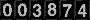

AVISO:
Algunas fotos proceden de Internet; si crees que deberían ser quitadas de la página, por favor escríbeme un correo electrónico.
Esta página no tiene ánimo de lucro.
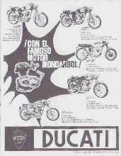
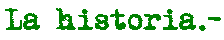
Índice:
1. Introducción:
1.1 Ducati Italia.-1.2 Mototrans.-
2. La historia de Mototrans a través de los modelos:
2.1 La 125 sport.- 2.2 Se amplía el catálogo.- 2.3 La deluxe y los ciclomotores.- 2.4 La independencia de Mototrans: la 24 Horas.- 2.5 El modelo Scrambler y la Road 250.- 2.6 La nueva línea: Vento, Forza, Twin, Strada, Desmo.- 2.7 El final de la historia.- 2.8 Bibliografía.-
-Ver COPIA PARA IMPRIMIR de ésta página: Pincha aquí
-Así suena una DUCATI-MOTOTRANS MONO
1.Introducción.-
1.1 Ducati Italia.-
Ducati Meccanica SpA es una de las empresas fabricantes de motocicletas que todavía sigue produciendo a pesar del poder de la industria japonesa. Fue fundada por el ingeniero Antonio Cavalieri Ducati, el Sr. Carlos Crespi y tres de los hijos del Sr. Cavalieri en Bolonia (Italia) en 1925, como una sociedad fabricante de aparatos de radio y radiotécnica en general.
En 1935 se traslada la producción a Borgo Panigale (cerca de la anterior fábrica de Bolonia) donde se construye una nueva factoría. Durante la Segunda Guerra Mundial, unos tanques alemanes en retirada entraron en la planta de Borgo Panigale; se pudo salvar la maquinaria y se reconstruyó la fábrica.
En 1945, aprovechando que Siata (Società Italiana Applicazione Tecniche Auto-Aviatorie) había desarrollado un pequeño motor auxiliar de cuatro tiempos, perfecto para acoplar a las bicicletas, conocido como "Cucciolo" (cachorro de perro) de 48 cc (39 x 40 mm) que rendía 1 CV a 4500 rpm y tenía un bajo consumo, Ducati llega a un acuerdo con Siata para compartir la producción, y fabrica el ciclomotor T-1 del que vende una importante cantidad. Posteriores evoluciones de este ciclomotor afianzaron a Ducati en el mercado.
En 1952 Ducati diseña una motocicleta "de verdad", el modelo 98, que se presenta en el Salón de Milán en una versión todavía poco desarrollada denominada "Cavallino".
En 1954 Ducati cambia su nombre por el definitivo de Ducati Meccanica Spa, y su nuevo director pasó a ser Giusepppe Montano. Este mismo año aparecen las dos versiones definitivas del modelo 98, una sport y otra turismo, ambas con el motor de 98 cc, cuatro tiempos refrigerado por aire (y radiador refrigerador de aceite el modelo sport) y distribución por varillas.
Posteriormente, Ducati fichó al ingeniero que diseñó su revolucionario motor monocilíndrico monoárbol 4 tiempos, el doctor Fablio Taglioni, que provenía de F.B. Mondial. También diseñó el bicilíndrico en V que llevaban la 750 SS y la Pantah, en el que está basado el motor actual de las Ducati, e introdujo la distribución desmodrómica, además de otros proyectos para la competición, que dieron a Ducati un palmarés muy importante y una reputación de motocicleta bella, de calidad, fiable, robusta y sin problemas.
VOLVER AL ÍNDICE
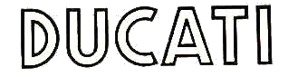
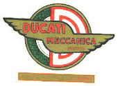
Fabio Taglioni (Dr. T).-
Nacido el 10 de septiembre de 1920 en Lugo di Romagna, Fabio Taglioni se graduó en ingeniería en 1943 y comenzó su carrera como diseñador en Mondial, el fabricante de Motos italianas.
Hizo su debut con Ducati el 1 de mayo de 1954 como Director Técnico y en un tiempo récord diseñó un motor de 100cc la "Gran Sport" Ducati - la conocida cariñosamente como Marianna - para ganar varias ediciones del Motogiro Milán-Taranto del 1955 a 1957.
En 1956, Taglioni diseñó la Ducati Desmo 125 Trialbero: aplicación a "Marianna" de un Sistema de distribución desmodrómica.
Su motor monocilíndrico (el mismo que montaron todas las Ducati-Mototrans monocilíndricas, se siguió usando hasta mitad de los años 80 con variaciones de todo tipo (Vento, Forza, Strada)
El Desmo - único sistema de válvulas de control - es una verdadera revolución para la empresa Ducati y para el mundo de la moto entera. Durante los años 50 y 60, los inventos de Taglioni se aplican en la producción de varias motocicletas.
En el 70, produce una "L" de 90 º, omnipresente en los modelos actuales de Ducati.
Entre las muchas victorias de la versión de carreras de la doble primera cilindros Ducati, los más memorables son de las 200 millas de Imola en 1972 con Paul Smart y la Isla de Man TT en 1978 con Mike Hailwood.
La carrera de Fabio Taglioni, motivada por la pasión desenfrenada de los motores competititivos, ha sido fundamental para el éxito internacional de Ducati como un productor de motocicletas de competición de alto rendimiento.
Tenaz y decidido, el ingeniero colaboró con Ducati hasta 89 con incansable dedicación. ",
Conocido por nosotros los Ducatistas Dr. T, con su genio le ha dado a las "bicicletas" Ducati la mecánica de exclusividad y sofisticación técnica que las distingue en el mundo.
Fallecio en Bolonia el 18 julio de 2001.
1.2 Mototrans.-
De forma paralela, se funda en Barcelona la firma Maquinaria y Elementos de Transporte (Maquitrans), que se dedica a la reparación de trolebuses y tranvías. Esta compañía decide crear una sección para la construcción de triciclos motorizados de reparto. También se atrevieron con un scooter bicilíndrico de dos tiempos y 188,5 cc, que nunca llegó a fabricarse en serie.
En España, las Ducati italianas llegaban a Madrid por medio de Alejandro Maifava, que importaba los Cucciolo. Posteriormente, en 1955, la casa Cliper, de Barcelona, importa los Cucciolo y triciclos de reparto, y en 1956 comienza la importación del modelo 98 en las dos versiones.
En 1957, Maquitrans y Cliper contactan para empezar a construir conjuntamente motocicletas. Maquitrans aporta capital e instalaciones y Cliper conocimiento del terreno que pisan (el propietario de Cliper era Eusebio Andreu Virgili, uno de los pocos que entendían de motos en Mototrans) y muchas ganas.
En 1958 se constituye la sociedad conjunta que se denomina MOTOTRANS. Equipan unas instalaciones en la calle Almogávares de Barcelona con toda la maquinaria necesaria para montar las motocicletas, y consiguen una calidad superior (aunque algunas piezas todavía las traen de Italia). A partir de ese momento se dejan de importar los cucciolo y el modelo 98. VOLVER AL ÍNDICE.
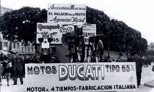
2. La Historia de Mototrans a través de los modelos.-
2.1. La 125 Sport.-
El dos de diciembre de 1959 se presenta la Ducati 125 Sport en el hotel Avenida Palace, el modelo de "10 CV y 110 km/h" que se puso a la venta a partir de 1960. La situación motociclista en España por aquella época se dividía entre Bultaquistas y Montesistas, además de los propietarios de otras marcas como Lube Renn, Isso, Derbi, Narcla, Mv, Ossa, Peugeot, Guzzi, etc. que no tenían un carácter tan deportivo, sino un concepto más utilitario.
No había motocicletas que tuvieran la calidad y los detalles que se consiguieron con la producción de esta Ducati Mototrans, empezando por su distribución por eje rey, árbol de levas en cabeza y la utilización de componentes como: carburadores Dell´Orto, horquillas Llobe basadas en el diseño Marzocchi italiano, frenos Grimeca y embragues Drim, equipo Motoplat, pistones Borgo Tarabusi, bujías Bosch, baterías Tudor, llantas Akront de aluminio, además del innovador sistema de alternador-regulador con platinos y condensador externos al volante magnético y la batería, que tanta sofisticación presentaba en este principio de los años 60: el resultado final era deslumbrante. La moto era más cara que sus directas competidoras de dos tiempos: Bultaco Tralla 101 y Montesa Brío 110, pero el producto final hacía entender (que quizás no aceptar) la diferencia de precio. VOLVER AL ÍNDICE.
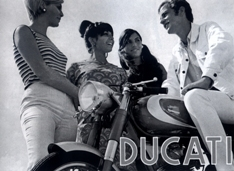
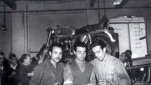
2.2. Se amplía el catálogo.-
En 1961 se amplía la línea de producción y se fabrica la versión tranquila de la 125 sport, la 125 TS, con menores prestaciones (al estar menos "tocada") y manillar de paseo, como diferencias más notables. Su árbol de levas era menos "racing", haciendo a la moto funcionar a un régimen de vueltas menor, las válvulas también variaban y tenía una relación de compresión menor. También aparece el modelo 175 TS "la Ducati perfecta", conocida por su gran fiabilidad y sus buenas prestaciones, modelo con el que se dio la vuelta al mundo y con el que Ricardo Fargas y José Mª Arenas participaron en el Rallye de los 1000 km: fue el modelo más vendido de España.
Se presenta también su versión sport, una belleza denominada 200 Élite. Todas ellas se presentan en la Feria de Barcelona de 1960 y todas estas apuestas de fabricación se ven respaldadas por el excelente papel que Ducati hace en las competiciones en nuestro país con los pilotos Ricardo Fargas, Bruno Spaggiari y Mandolini, que obtienen la victoria en pruebas de velocidad y subida en cuesta, además de los triunfos en las 24 horas de Montjuic, prueba de resistencia muy reconocida en España. Otros pilotos de la marca fueron Ángel Nieto y Mauricio Aschl. VOLVER AL ÍNDICE.
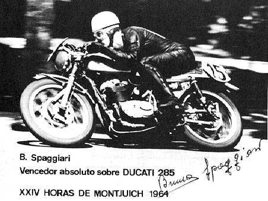
2.3. La 250 Deluxe y los ciclomotores.-
En 1963 Mototrans fabrica la 250 Deluxe, una moto desarrollada a partir de la italiana Diana 250, pero que cambiaba las medidas del diámetro del pistón 74 mm y su carrera de 57,8 mm (preferida de Taglioni) por unas más cuadradas de 66 mm por 69 mm. Es la primera muestra de independencia de Mototrans respecto a los diseños italianos; se exportan sólo 5 unidades al mercado inglés de color negro y acabados en plata. Mototrans empieza en ese mismo año, 1963, a fabricar los ciclomotores de Ducati Italia en España, debido a la importancia de este sector, y presenta en la Feria de Muestras un modelo de chasis abierto, el Piuma, y otro más deportivo, el 48 sport, ambos con cambios de 3 marchas al puño y 48 cc.
En 1965 se amplían las instalaciones de Mototrans, puesto que tiene un objetivo de fabricación de 19000 máquinas fabricadas anuales (la mayoría de ellas eran ciclomotores). En la primavera de este año las nuevas instalaciones están listas y Ducati pierde a uno de sus valedores más importantes: Virgili se marcha de la empresa por diferencias con la junta directiva. En 1966 se presentan los dos modelos que sustituyeron a las 125 Sport y la TS: los modelos 160 cc en sus versiones TS y Sport, que son básicamente iguales, pero con el aumento de cilindrada en 40 cc y otros colores. VOLVER AL ÍNDICE.
2.4 La independencia de Mototrans: la 24 Horas.-
En la feria de Barcelona de diciembre de 1965 y en la de Madrid de enero de 1966, se presenta el modelo más personal de Mototrans: la 24 horas. La moto, basada en las victorias de Ducati en las 24 horas de Montjuic, era impresionante, tanto por sus prestaciones como por su aspecto desde el punto de vista estético, con el depósito de fibra, estriberas retrasadas, asiento con forma de colín, etc. Los italianos tenían una moto deportiva parecida, el modelo Mach 1, y otro modelo, el Mark 3, en Estados Unidos, pero estéticamente éstas se parecían más a una 250 Deluxe que a la 24 horas. Esta 24 horas tenía cinco marchas a diferencia de todos los anteriores modelos de Mototrans, y una velocidad máxima de 160 km/h.
La 24 horas, considerada una de las motocicletas más bellas de su época, es hoy en día una valiosa pieza de colección para cualquier aficionado a la moto antigua.
Se fabricaron 500 unidades de la primera serie y en dos series posteriores se fabricó hasta 1974, exportándose 150 unidades al mercado inglés en agosto de 1971, donde fue conocida como "24 horrors" (24 horrores) sin duda por la falta de adaptación de la máquina a circuitos cortos y complicados, donde era lenta y pesada y se rompía con facilidad, y no porque la motocicleta fuera de mala calidad, sino porque no estaba destinada a llevar la velocidad requerida en ese tipo de carreras
. 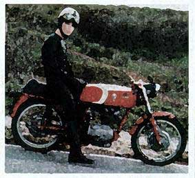
Al parecer un propietario inglés de una de estas máquinas la anunció en los clasificados de la revista Motor Cycle News como "24 horrors for sale", e invitaba a todo el que quisiera a ir a la puerta de Vic Camp (importador de Mototrans en Inglaterra) donde iba a desmontar la moto y venderla pieza a pieza para protestar por su baja calidad, después de haber roto el motor a los 1600 km recorridos. Según Mick Walker, el problema principal era el material del árbol de levas, levas y las válvulas, que siendo sustituidas por unas italianas, hacían a la moto funcionar perfectamente.
Ricardo Fargas se llevaba algunas de las piezas fabricadas en Barcelona cuando viajaba a Italia, para hacerles allí un control de calidad que en España no se podía llevar a cabo por no tener las herramientas adecuadas. En este y otros diseños participó de manera activa Félix Ferrer, que fue probador de la marca y trabajó en todas las secciones técnicas.
También se presentó en 1966 el modelo 200 TS, que venía a sustituir al exitoso modelo 175 TS. La 200 TS era igual estéticamente a la 175 TS pero con otros colores y los centímetros cúbicos de aumento del diámetro del pistón. Estos últimos años de la década de los 60 suponen para Mototrans una paralización de la producción de motocicletas siendo su mercado principal los ciclomotores, puesto que las motos están en crisis. Ricardo Fargas diseña el velomotor 50 TT a partir de restos de otras motos de la fábrica. Se fabrica también la 200 V5 que sustituye a la Élite 200 con un lavado de cara que incluía un cambio de colores sin muchas más novedades. Se intenta fabricar una moto de cross, la RTS 250, que se presenta en el Salón de Barcelona de 1970, pero es un fracaso y no tuvo aceptación. También se presenta el ciclomotor Mini 2 y la gran sensación de este salón, el modelo Scrambler. VOLVER AL ÍNDICE.

2.5. El Modelo Scrambler y la Road 250.-
La Scrambler fue un encargo de Berliner Motor Company, compañía americana de distribución de motos europeas y, por tanto, estaba pensada para el mercado americano; era un modelo campo-ciudad de 250 cc con una estética sin duda adelantada a su tiempo: motor de cinco velocidades de cárter ancho (cárter que permite introducir una quinta velocidad y más cantidad de aceite) y que proporciona a Mototrans la inspiración para fabricar, con cuatro retoques, un modelo de producción nacional: la 250 ROAD. Se fabricaron en cilindradas de 250 y 350 cc, y la Scrambler también en 450 cc, modelo que no se vendió en España.
La Scrambler 250 se llegó a fabricar íntegramente en España y era ensamblada en Italia.
Entre 1972 y 1976 se fabricaron en España estos modelos, y cambiaron el Scrambler 250 por el 350 en 1973.
En 1977 se presentó el modelo ROAD 250 77: una moto con parte ciclo de ROAD y el depósito de los antiguos modelos de carretera en color rojo con algunas mejoras en el diseño del asiento, cuadro de mandos de la Forza, pilotos de intermitencias, etc, que la hacían bastante bonita. VOLVER AL ÍNDICE.
2.6.
La nueva línea 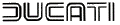
:
Vento, Forza, Twin, Strada,
Desmo.-
En 1974 la situación económica de la empresa no era muy buena, se debía dinero a los bancos y Ducati Italia también estaba en crisis, pero había que renovar la gama de los años 60 ya anticuada, y aprovechando un conjunto en fibra de colín-depósito que Ricardo Fargas se había traido de Italia se diseña una nueva moto, la Vento 350, modelo deportivo que vino a cubrir el hueco dejado por la 24 horas.
También se presenta la Forza, un modelo de carretera más turismo. Respecto a otros modelos derivados de los ciclomotores se fabrica el modelo Senda 75 y la Pronto 100. Los motores de los ciclomotores fueron empleados por marcas ajenas a Mototrans, como Bultaco y Ossa, debido a su gran calidad.
Las versiones definitivas de la Vento y la Forza no salen al mercado hasta dos años después, ligeramente mejoradas, y sin competidoras en el mercado de motocicletas de carretera, puesto que las otras marcas españolas se dedicaban a las motos de campo principalmente.
En 1976 Ducati Italia empezó a fabricar la 500 TWIN, modelo bicilíndrico horizontal con distribución por cadena, y Mototrans vio su oportunidad de entrar en el sector de motos de gran cilindrada, pero la moto resultó un fracaso absoluto, pues un fallo de diseño del sistema de engrase de aceite obligó a montar un radiador en todas las unidades para enfriarlo. Además tenía problemas de estabilidad, ruido de motor, etc.
Para terminar de rematar la mala suerte, este año llegaron los fabricantes japoneses a España y la competencia empezó a ser feroz. Se presenta la 250 STRADA, con el motor tradicional, chasis de la TWIN y la estética de la FORZA, pero más barata que ésta, al no incorporar freno de disco y otros detalles.
Dos años después de esta presentación y, después de las auténticas operaciones de cirugía que los talleres hacían con las TWIN, Mototrans presenta un modelo evolucionado, la 500 DESMO, con distribución desmodrómica, que tuvo, debido a la mala fama de la TWIN, un fracaso de ventas. VOLVER AL ÍNDICE.
2.7. El final de la historia.-
En 1978 empieza el calvario para Mototrans, a raíz de un acuerdo con Sanglas y Yamaha para producir conjuntamente, que se convierte en un "engaño" de los japoneses para empezar a fabricar en la factoría de Sanglas.
Cien obreros de Mototrans se van a la fábrica de Sanglas, y eso le viene bien a Mototrans, que tenía una plantilla sobredimensionada y problemas con los sindicatos. Vuelve Virgili a Mototrans y la marca, que necesitaba modelos de fabricación propia para salir adelante, sin depender de la marca italiana ni de su evolución, desarrolla la Yack 410, esta vez bajo las siglas MTV (Mototrans Virgili), un modelo de trail de 400 cc monocilíndrico, distribución por correa dentada y desmodrómica, que finalmente no se llegó nunca a fabricar por lo caro del proyecto y la negativa de los bancos a apoyarlo económicamente.
En 1981 se intentó con los ciclomotores MTV con motor alemán Zündapp, en versión cross y carretera, con suspensión cantilever, cuatro velocidades y una bonita línea en ambas versiones.
En 1982 se produce la intervención judicial de la fábrica, que nombra un administrador. Se le debe dinero a Banesto. La empresa anuncia la suspensión de pagos. Los sindicatos no sirven de ninguna ayuda en esta situación. Los ciclomotores siguen algún tiempo más en el mercado, pero se decide cerrar la fábrica.
Ricardo Fargas y Felix Ferrer, a través de Gamma Motors, se quedan con todo el recambio, el proyecto de competición Tecfar y las motos MTV. La crisis del sector está en marcha, y el gobierno no presta ayuda a las fábricas, terminando muchas de ellas como terminó MOTOTRANS. Fábricas tan importantes para la historia del motociclismo español como Bultaco y Ossa, tienen que cerrar sus puertas. Los japoneses están aquí y han venido para quedarse. VOLVER AL ÍNDICE.
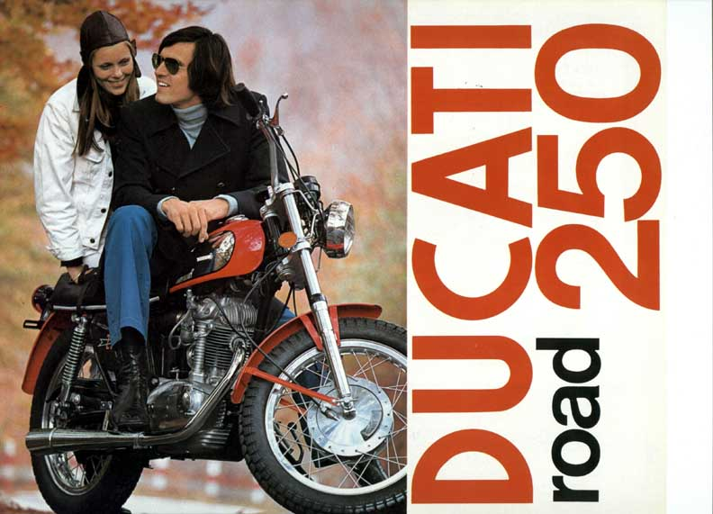
2.8. Bibliografía.-
Herreros, Francisco. Ducati Mototrans: mucho más que una licencia de fabricación. Barcelona; Moto Retro, 1999.
Polo, Carlos. Ducati Mototrans. Girona; Ediciones Benzina, 2000.
Walker, Mick. Ducati singles. Londres; Osprey Pub Co, 1997.
Herreros, Francisco. "Ducati y sus monoárbol". Moto Retro nº 25 (marzo 1996): 40 pags.
García de Mingo, Roberto. "Larga noche de julio." Motorcycle Perfomance nº 21 (septiembre 2000): 72-77.
Polo, Carlos. "La reina del bulevar." Motorcycle Perfomance nº 18 (junio 2000): 88-91.
Ruiz, Andrés. "La primera Ducati." Motor Clásico nº 143 (diciembre 1999): 80-85.
"La Ducati 250." Autopista nº 219 (marzo 1963): 21-24.
"Circular de Mototrans destinada a concesionarios de la marca." nº 2, 1960.
 VOLVER
AL ÍNDICE
VOLVER
AL ÍNDICE
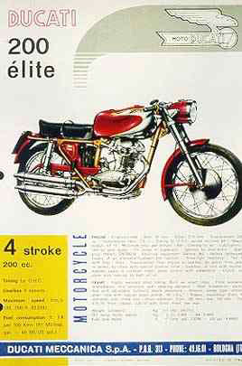